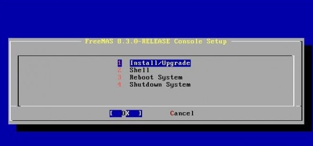
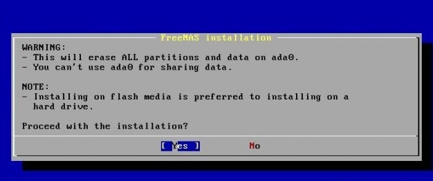

1- Para poder realizar las copias de ubuntu, FreeNAS deberá estar instalado dentro de proxmox. Para ello subiremos la iso desde la interfaz.

1- Para poder realizar las copias de ubuntu, FreeNAS deberá estar instalado dentro de proxmox. Para ello subiremos la iso desde la interfaz.
2- Seleccionaremos el botón situado en el lado superior derecho.

3- Nos aparecerá la siguiente ventana. Le damos un nombre e ID.

4- Seleccionamos la iso del sistema.

5- Le damos el espacio deseado al disco.
6- Le damos la cantidad de núcleos.
7- La cantidad de memoria ram.
Una vez configurados todos los apartados de la ventana procederemos a iniciar y configurar la máquina.
8- Seleccionamos Install/Upgrade.
9- Elegimos el disco en el que freenas se instalará.
10- Seleccionamos Yes.
11- Una vez instalado reiniciamos el sistema.
12- Una vez reiniciado aparecerá el siguiente menú.
Al igual que en proxmox, este mostrará una ip para poder conectarse remotamente.
13- Si queremos configurar la ip y la máscara seleccionaremos la opción 1 y seguiremos los siguientes pasos.
14- Si queremos configurar la DNS seleccionaremos la opción 6 e introduciremos la DNS.